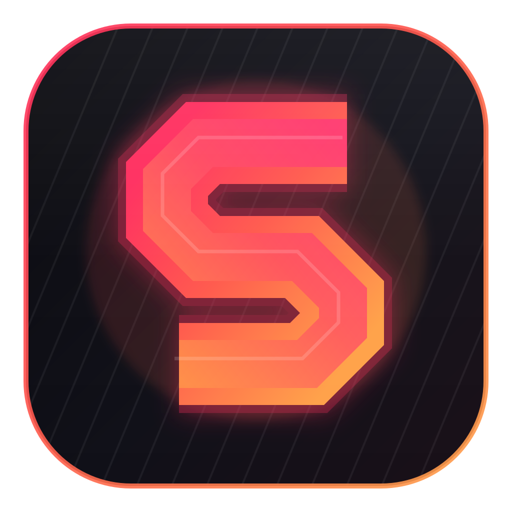
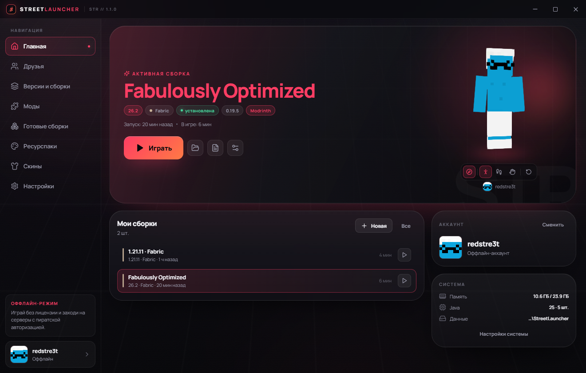
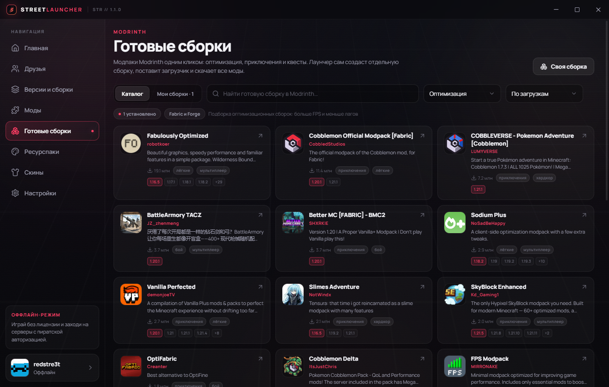

Все версии и загрузчики
Vanilla, Fabric, Forge, NeoForge, OptiFine и Forge + OptiFine. Java и библиотеки ставятся автоматически.
1.8.9 → 26.3
STREETLAUNCHER STR // 1.1Все версии, готовые сборки, моды и друзья — в одном лаунчере. Без лишнего шума, с чистым интерфейсом и автоматическими обновлениями.

Лаунчер берёт на себя Java, библиотеки, моды и обновления. Вам остаётся выбрать, во что играть.
Vanilla, Fabric, Forge, NeoForge, OptiFine и Forge + OptiFine. Java и библиотеки ставятся автоматически.
1.8.9 → 26.3Оптимизация, приключения, квесты и технологии из каталога Modrinth. Установка в один клик вместе с модами.
ModrinthДобавьте друга по нику и видьте, кто открыл лаунчер, а у кого уже запущен Minecraft.
онлайн-статусыЗагрузите скин, крутите модель мышкой и включайте анимации прямо на главном экране.
skinview3dПресеты, собственные цвета, фон, стекло и скругления. Интерфейс подстраивается под ваш стиль.
кастомизацияЛаунчер сам проверяет свежую версию. Один клик — и у вас обновление без переустановки аккаунтов и сборок.
автообновлениеНикаких вкладок из 2015-го. Только понятные действия и статусы, которые действительно нужны.
Активная сборка, 3D-скин, время игры и память — всё на одном экране.
Fabulously Optimized, Cobblemon, Better MC и десятки других — из каталога Modrinth. Выберите сборку, нажмите «Установить», остальное сделает лаунчер.

Добавьте друга по нику. Он появится в списке, как только откроет Street Launcher. Видно, кто просто в лаунчере, а кто уже в игре — и в какой сборке.
Меняйте акценты, фон, прозрачность стекла и скругления. Выберите готовый пресет или соберите свой — вкус не придётся подстраивать под лаунчер.
Windows 10/11 · x64 · установщик ~110 МБ
Да. Лаунчер бесплатный: все версии, загрузчики, моды и сборки доступны без подписки.
Нет. Поддерживаются оффлайн-аккаунты, Ely.by и Microsoft. Для официального входа используется окно Microsoft — лаунчер не запрашивает пароль.
От 1.8.9 до 26.3, включая Fabric, Forge, NeoForge, OptiFine и Forge + OptiFine. Снапшоты можно включить в настройках.
В папку %APPDATA%\StreetLauncher. Открыть её можно из настроек лаунчера. При обновлении лаунчера данные не удаляются.
Лаунчер проверяет подписанный канал обновлений и показывает баннер на главной. Один клик — загрузка, проверка файла и установка. Вручную искать новый установщик не нужно.